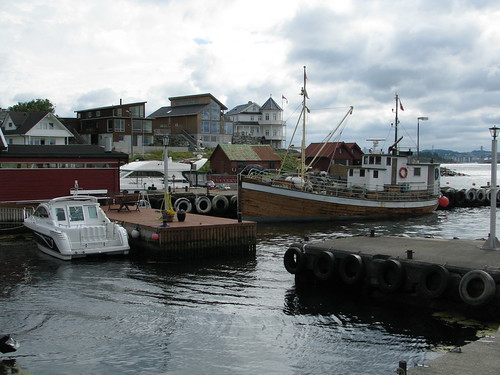

Andreas Johansen
andreas@eksempel.no · demoprofil
Om Vassøy-appen
Dette er et designutkast for en beboerportal på Vassøy. Ingen data er ekte, ingen innlogging finnes, og ingenting sendes fra denne versjonen.
Varslingsinnstillinger
Valg lagres kun lokalt i denne nettleseren.

Vassøy –
alltid et øy i hjertet
alltid et øy i hjertet
VASSØY designutkast · Data og bilder er illustrasjoner · Om appen